Erzählt mit allen fünf Karten eine möglichst absurde Nachricht. Jede erwähnte Karte zählt einen Punkt.
Eine noch nicht bestätigte Wertung zählt beim vorzeitigen Beenden nicht. Ein leerer Stapel wird automatisch neu gemischt. Der Spielstand bleibt in diesem Browser gespeichert.
Es zählen alle bestätigten Runden. Eine laufende Runde wird nicht gewertet.
DIE REDAKTION HAT ENTSCHIEDEN
Die Rangliste eurer Nachrichtenmacher.